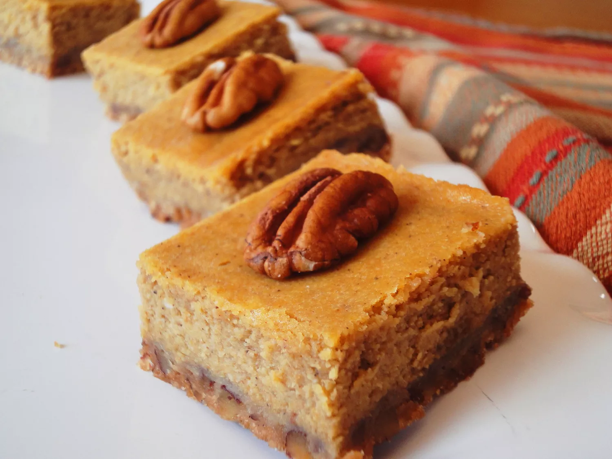

Pumpkin Cheesecake

Description
This pumpkin cheesecake is easy to make and perfect for the fall holidays.
It taste best when chilled in the refrigerator overnight!
Ingredients
Crust
- 1 ½ cups all-purpose flour
- ½ cup butter, softened
- ¼ cup white sugar
Cheesecake Layer
- 8 ounces cream cheese, softened
- ¼ cup white sugar
- 1 large egg
- ½ teaspoon vanilla extract
Pumpkin Layer
- 1 (15 ounce) can pumpkin puree
- 1 (12 ounce) can evaporated milk
- ¾ cup white sugar
- 2 large eggs
- ¾ teaspoon ground cinnamon
- ½ teaspoon salt
- ½ teaspoon ground ginger
- ¼ teaspoon ground cloves
Steps
- Preheat the oven to 425 degrees F (220 degrees C).
- Stir flour, butter, and 1/4 cup sugar together in a bowl until dough is well-blended. Pat dough into the bottom of a 9x13-inch baking dish.
- Bake in the preheated oven until crust is lightly golden, 10 to 15 minutes. Cool. Reduce oven temperature to 350 degrees F (175 degrees C).
- Beat cream cheese, 1/4 cup sugar, 1 egg, and vanilla together in a bowl with an electric mixer until smooth.
- Whisk pumpkin puree, evaporated milk, 3/4 cup sugar, 2 eggs, cinnamon, salt, ginger, and cloves together in a bowl.
- Spread cream cheese mixture evenly over cooled crust. Pour pumpkin mixture over cream cheese mixture.
- Bake in the preheated oven until cake is set, about 60 minutes. Cool to room temperature, then refrigerate overnight.